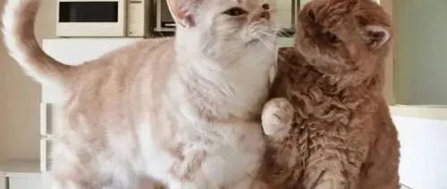

心理 | 依恋是反弱肉强食常识的
学达尔文的《进化论》，很著名的结论就是：弱肉强食、适者生存。但依恋是生物学上的一个几乎反常的发现，依恋中的一方是有智慧的、强大的，另一方是相对弱小的，有智慧强大的一方保护弱小的一方，弱小的一方依附强大的一方，这和弱肉强食好像又是违背的。

首先说下依恋是什么。我们知道哺乳动物刚生下来常常是没有自己生存的能力的，其中尤其以人类最为明显，我们需要在养育者的照料下长大到一定时候才有自己行动和探索周边世界，在周边世界独立生存的能力。牛比人强一些，牛生下来没多久就能走能跑，落单时被捕杀的可能性就比人类幼崽要低（假如回到原始时期）。海龟则直接生下蛋就跑了，小海龟生下来就知道往海里跑，就知道吃东西，活不活得下来父母压根不管的。这时候，这些哺乳动物中的小家伙们就需要依附于更有力量和智慧的养育者才能存活，比如一被惊吓就会往养育者的身边跑，抱大腿，撒娇讨得养育者的喜爱等等。这种弱者依附于强者的现象就叫做依恋。

依恋的影响并不会随着人的长大就消失，因为人是社会动物，不能脱离社会独立生存。尤其现在自然界的其它灾害和生物并不是人类主要的威胁来源，而是在社会中的立足和发展，所以成年人也需要通过依附于更有智慧和强大的个体来获取安全感。其中一个突出的例子是恋爱和结婚，形成两个人/两个家庭的同盟。

还有一种依恋是人和宠物之间的。比如我们养了一只猫，我们把它照顾的很好，它就会把我们当作依恋的对象，我们和它之间就好像脱离了生物之间“弱肉强食”的规律。而且你可以说猫弱吗？也不是，它能给你很多精神上的滋养，这就和父母养育小孩一样，虽然有付出，但也会获得精神上的满足。
本质上，我觉得依恋是对关系、对安全的需要。不论你是强是弱，你是认同我的，我们是彼此的一部分，同舟共济，彼此成就，合作代替竞争。